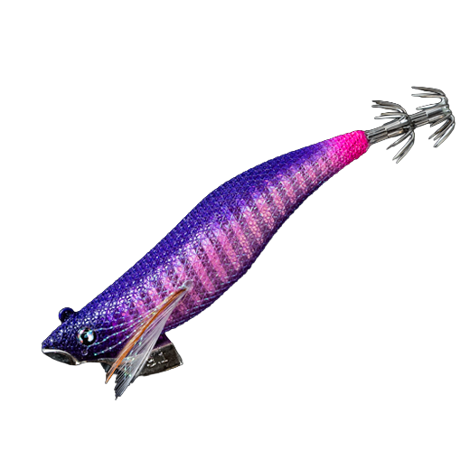
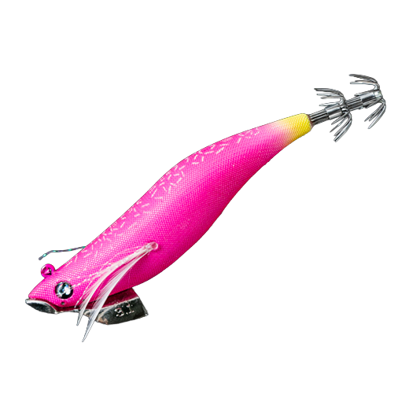
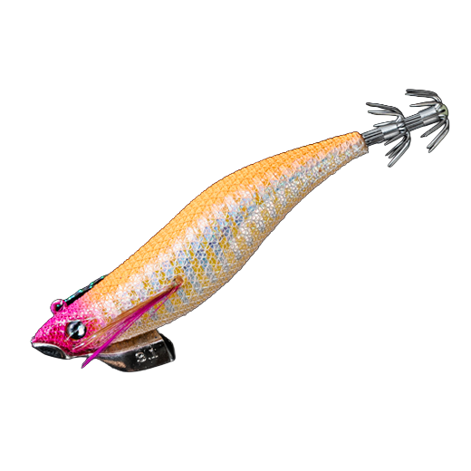
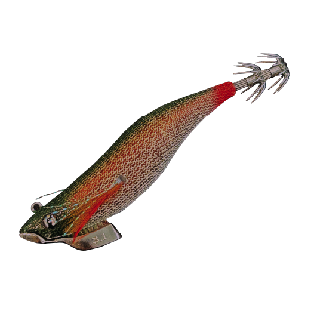

スイムマスター 3.1
（Swim Master 3.1）
スイムマスター 3.1（Swim Master 3.1）はNOTOMON（ノトモン）のエギです。
サーフキャスティングゲームのために生まれた、唯一無二の次世代エギです。
石川県・能登のブランド「NOTOMON」が提案する、シャクらずに投げて巻くだけでイカを抱かせるエギ。リップが無いのに、巻くだけでS字のスラロームを描きます。サイズはすべて3.1寸（95mm）で、浮くF・沈むS・速く沈むSDの3タイプがあります。

画像出典:NOTOMON公式HP
スペック
- メーカー
- NOTOMON（ノトモン）
- サイズ
- 3.1寸（95mm）
- タイプ
- 3.1F（フローティング）・3.1S（シンキング）・3.1SD（シンキングディープ）
- 重量
- F 17g／S 19g／SD 22g
- 沈下速度
- S 約4秒/m／SD 2秒/m（Fは浮く）
- カラー
- 全12色（Fは10色）
- ターゲット
- アオリイカ
- 価格
- F 1,900円／S・SD 1,800円（公式ショップの表示）
- 発売
- 2026年9月
- 販売
- NOTOMON公式オンラインショップ
▼今すぐチェック
スイムマスター 3.1の特徴
シャクらず、巻くだけでS字に泳ぐ「巻きのエギ」
-
巻くだけでS字スラローム
バルキーなボディがリトリーブでS字を描き、ただ巻くだけでイカを抱かせる動きを出す。スローから速巻きまで、どの速さにも対応する。
-
サーフで飛ぶ移動式タングステン
キャスト時は移動式のタングステンウェイトが後ろに寄って飛行姿勢が安定し、サーフでも遠くまで届く（F）。
-
浮く・沈む・速く沈むの3タイプ
世界初のフローティング仕様のFはサブサーフェスとドシャロー用。Sは遠浅や中くらいの水深、SDは急深サーフや深場で素早く底を取りたい時に使い分ける。
スイムマスター 3.1の使い方
基本は投げて、ただ巻くだけです。S字に泳がせながら、巻く速さを変えてイカの反応を見ます。
SやSDは着底させてから、ボトムのリフト＆フォール、ストップ＆ゴー、ストローリングなどの「縦の誘い」と、巻きの「横の誘い」を組み合わせると効果的。Fは表層〜ごく浅い場所を巻いて探り、速巻きやジャークで横に逃げる動き（サイドフェイク）も入れられます。
スイムマスター 3.1の得意な状況
サーフでアオリイカを狙う時が得意です。シャクるエギでは攻めにくい、遠浅のサーフやごく浅い場所でも使えます。
秋が深まってイカが深場に移る時期や、急深のサーフ、風や潮が速い日はSDの出番。シャクった後のS字の動きは、浅場のボートエギングでも効果があるとされています。
シャクるエギでは攻めにくい遠浅のサーフでも、アオリイカが釣れるのが魅力です。
ワンポイント
S字に泳がせながら、巻きの途中でストップを入れてフォールさせ、「横の誘い」と「縦の誘い」を切り替えるのがコツです。抱いてくるのはフォールや止めた瞬間が多いので、巻く速さよりも「止める間」を意識しましょう。
スイムマスターのタイプの使い分け
| タイプ | 重さ | 沈み方 | こんな時に |
|---|---|---|---|
| 3.1F | 17g | 浮く（泳層30〜60cm） | ドシャローやサブサーフェスを巻きたい時 |
| 3.1S | 19g | 約4秒/m | 遠浅〜中くらいの水深。フォールをゆっくり見せたい時 |
| 3.1SD | 22g | 2秒/m | 急深のサーフや深場。風や潮が速い時、スレたイカに |
※数値は公式ショップとルアーニュースRの紹介記事（NOTOMON執筆）より。サイズはどれも3.1寸（95mm）。
オススメカラー
スイムマスターは全12色（Fは10色、S・SDは限定2色を加えた12色）。そのうち4色を紹介します（画像は公式より）。

梁山泊（りょうざんぱく）全タイプにあるスタンダードカラー。

桃天祥ピンク系のアピールカラー。朝夕マズメや濁り潮に。

黄金橙オレンジ系で目立つカラー。濁り潮やローライトに。

赤神鯵（アカガミアジ）シンキングモデル（S・SD）だけの限定カラー。
画像出典:NOTOMON公式HP
▼今すぐチェック
スイムマスター 3.1に似ているルアー
-
 キャストランナー
クレイジーオーシャン
詳細はこちら＞
キャストランナー
クレイジーオーシャン
詳細はこちら＞
シンカーハンガー付きで遠投できるエギ。
-
 エギ王K
ヤマシタ
詳細はこちら＞
エギ王K
ヤマシタ
詳細はこちら＞
シャクって使う定番のエギ。巻きで反応が無い時に。
-
 ラマレル
ブルーブルー
詳細はこちら＞
ラマレル
ブルーブルー
詳細はこちら＞
ブルーブルーの新しいエギ。